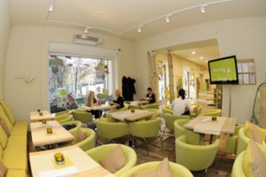
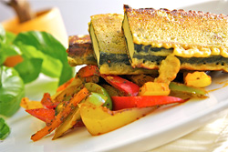
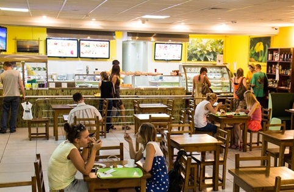
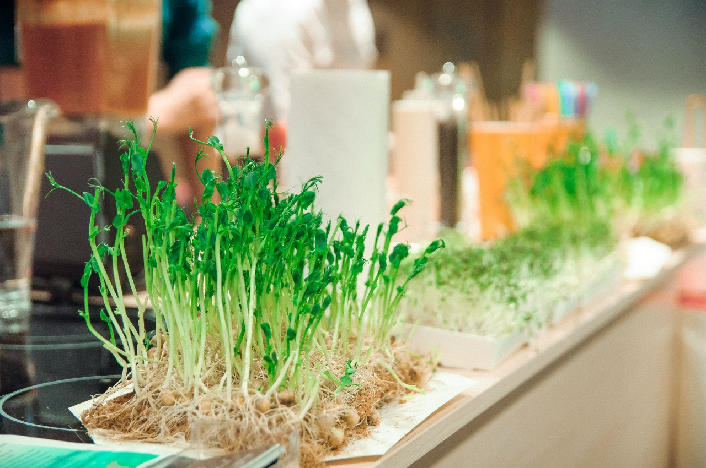
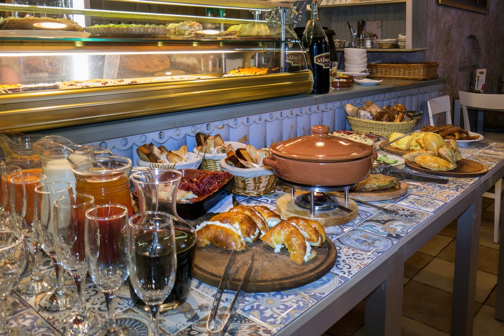
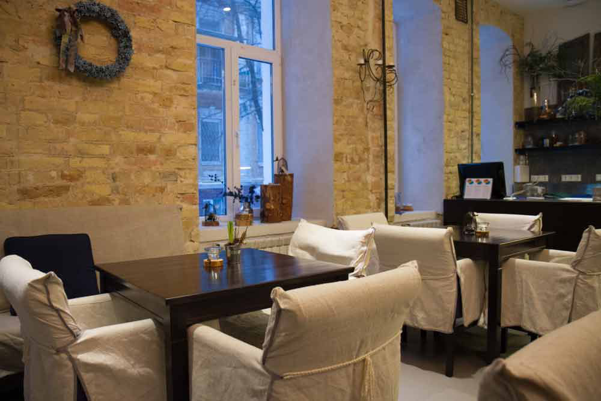
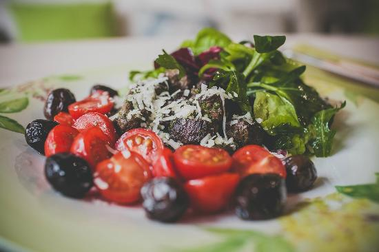
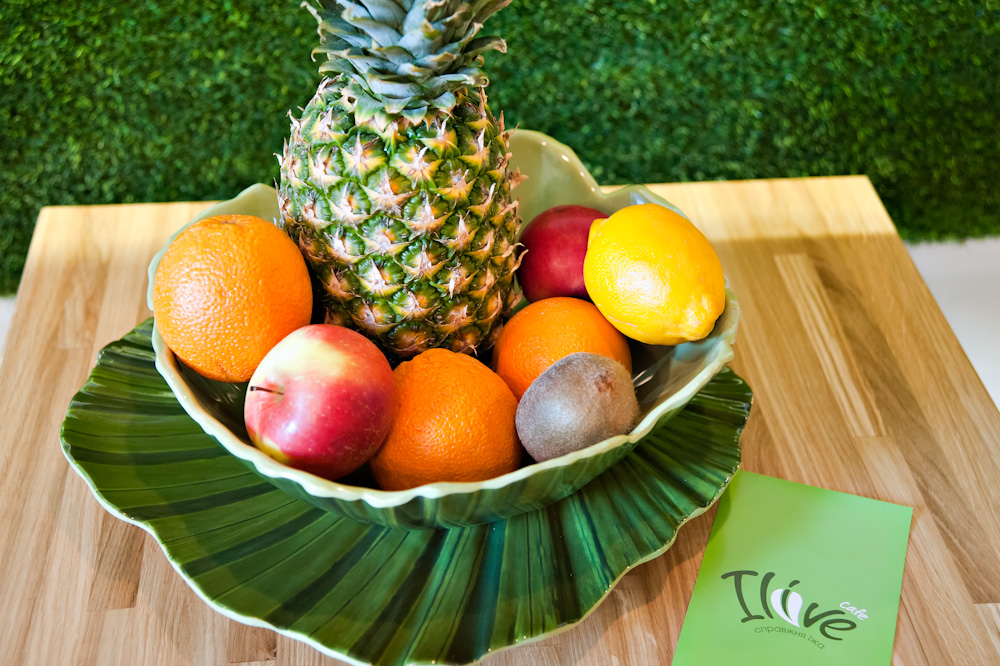

У центрі міста розташовується маленький куточок спокою та
чистоти. Тут органічне все: їжа, інтер'єр та навіть музика.
Інтер'єр кафе, меблі та освітлення спроектовані провідними
дизайнерами і виготовлені з екологічно безпечних матеріалів,
колірна гамма біло-салатова, що підкреслює спрямованість кафе.
Незважаючи на те, що заклад дуже маленький, тут повноцінне меню з
основними стравами, десертами, напоями та круасанами з власної
пекарні. І що особливо порадувало - окреме меню сніданків,
починаючи з мюслі і закінчуючи млинцями. В особливому фаворі тут
екологічна кава або чай, карта яких постійно поповнюється і
пропонується за акційною ціною.

Це вегетаріанське літературне кафе, в якому ви можете не
тільки скуштувати смачні страви, а й почитати цікаві книги. Тут
можна знайти найрізноманітніші тексти, але всі вони спрямовані на
розвиток людини (на тему релігії, йоги, психології). Для
приготування їжі тут не використовують продукти, пов'язані з
насильством (м'ясо, риба, яйця, морепродукти). Для додання стравам
смаку та аромату місцеві кухарі застосовують різні прянощі. Тут
знайдуть що поїсти і лакто-вегетаріанці, і вегани, і ті, хто
просто прагне правильно харчуватися. Концепція закладу знайшла
своє відображення і в інтер'єрі. Меблі виконані з дерева, крісла
оббиті натуральними тканинами, на столиках стоять вазони з
квітами, а через великі вікна струмує денне світло.

На Петрівці, серед промзони, як екологічний оазис,
розташувалося кафе "Eco Buffet". Цей заклад підійде тим людям, які
піклуються про здоров'я. Крім того, що тут готують з екологічно
чистих продуктів, так ще й вегетаріанську та дієтичну їжу. Багато
страв просто не містять м'яса. При цьому робиться великий акцент
на молочні продукти, горіхи і боби. При приготуванні страв
використовується натуральне молоко, привезене з ферми. В "Еко
Буфеті" м'ясо замінюють сейтаном - це пшеничний білок, який за
своєю текстурою і кольором дуже нагадує яловичину. Для додання
стравам рибного смаку використовують водорості. Всі страви в цьому
кафе виглядають дуже апетитно.

Ресторан живої кухні "Nebos" розташовується в самому серці
столиці, в двох кроках від "Майдану Незалежності". Для
приготування страв використовуються лише натуральні продукти
(фрукти, овочі, насіння, горіхи), вирощені в нашому регіоні без
застосування "хімії". Їжа не піддається термічній обробці, тому
зберігає максимум корисних речовин. В закладі подають органічну
каву, смузі, фреші. Тут хороша чайна карта і дуже цікаві десерти
(наприклад, торт "Мохіто", банановий "Наполеон", штрудель з маком
та в'яленою вишнею). На сніданок можна поїсти млинці з сиром,
маком і яблуком, сирники з кеш'ю, фруктові салати, кашу з
пророщеної гречки з фруктами і випити смузі, капучіно або латте з
мигдальним молоком.

Еко-гастрономія "Арбекіна" знаходиться в центрі Києва, на
Майдані Незалежності і поєднує в собі класичну іспанську,
середземноморську, а також чудову каталонську кухні в поєднанні з
неперевершеною одеською кухнею. У кафе один зал, який оформлений в
прованському стилі. Інтер'єр в бежево-оливкових тонах, прості
меблі і картини на стінах - вся ця простота надає кафе сільський
шарм. Головною родзинкою інтер'єру є відкритий прилавок, на якому
розташовуються свіжоспечені еко-смакоти. Всі страви приготовані
виключно на оливковій олії, а стравою-хітом вважається хамон.
Кухня «Арбекіни» - це доступна елітарність простих продуктів і
розкіш природних поєднань. Якщо сиров'ялена шинка, овеча бринза
або козячий сир - то закуплені в екологічно чистих фермерських
господарствах Іспанії і України, якщо помідори або оливки
домашнього посолу - то неодмінно з іспанським характером: яскраві,
пружні, налиті сонцем.

Tri: позиціонується як «усвідомлений» сімейний
вегетаріанський ресторан, в якому є страви як для вегетаріанців,
так і для веганів та сироїдів. Тут є своя творча майстерня, де
проводяться заняття для дітей та дорослих: наприклад,
майстер-класи з техніки декупажу та живопису, лекції про красу,
уроки хореографії для дітей та групові заняття з дитячим
терапевтом. Іноді в Tri: презентують книги і організовують
виставки. Тут використовують сезонні та фермерські продукти, щоб
зберігалася їх свіжість і якість. Акцент тут робиться на продуктах
з цілісного зерна, а також солодощах для сироїдів і злакових
гарячих напоях. Десерти тут готують без цукру, яєць і дріжджів, а
до ячмінного або цікорійового напою подають квіти кокоса, що
замінюють тростинний цукор.

Магазин "Еко шик" відкрив на Оболонських Липках кафе
здорового харчування «Органік Дім». Тут готують не на сковородах і
не в каструлях, а в спеціальному посуді, максимально зберігаючому
якість продуктів. Цей апарат працює, не руйнуючи клітковину і
структуру молекул, що дозволяє зберегти якість та поживну цінність
продуктів протягом 12 годин. Дієтолог Людмила Веспер зібрала
безліч рецептів здорових страв і тепер на кухні кафе ділиться
ними. Також в кафе щоп'ятниці проводять "Звану вечерю", де за
смачною, а головне корисною і збалансованою їжею, проводяться
бесіди на різні теми, близькі до органіки, екології та здорового
способу життя.

В органічному кафе Maison Blanche ви насолодитеся здоровими
стравами, приготованими з використанням високоякісних натуральних,
фермерських або органічних продуктів. "Наші страви солять або
підсолоджують здоровими альтернативами кухонної солі і білого
цукру. Ми використовуємо морську сіль, легко засвоювану організмом
і багату 80 мінералами. В якості підсолоджувача ми пропонуємо Вам
неочищений цукор, органічний мед, стевію. Ми готуємо страви еко
методами, такими як: запікання, варіння, гриль, легке
обсмажування. Ми співпрацюємо з приватними фермами, виробляють
унікальні екопродукти (яйця, курка, сири, овочі). У нашому меню
передбачені вегетаріанські та пісні страви. Ми проти
генно-модифікованих продуктів і не використовуємо їх"

ILive - це лаунж-кафе здорової їжі з приємним інтер'єром і
різноманітним меню. Крім вегетаріанських страв, тут подають лосось
і морепродукти, є суші, піца і для чогось кальян з караоке на
додачу. При цьому в ILive стверджують, що використовують тільки
органічні продукти «для найкращого смаку і очищаючого ефекту». Всі
страви готуються на джерельній воді. А в Mini Shop Organic
продається ця сама джерельна вода, а також козяче молоко,
трав'яний чай, мед, сухофрукти і - незрозуміло чому - домашні яйця
і кури. У кафе часто проводяться кулінарні майстер-класи з
приготуванню корисних соусів, майонезів і заправок до салатів,
зелених коктейлів, овочевих смузі, «живого» українського борщу.
Власниця закладу Лілія Олійник веде блог, в якому відповідає на
питання про здорове харчування. Іноді тут проходять події для
дітей.